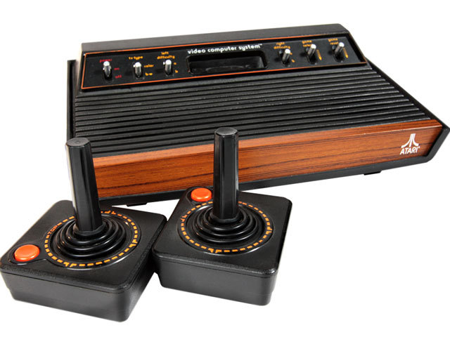

Bowser in de Browser
NESNES
... dus je gokt erop dat de snelheid van computers de traagheid van JavaScript heeft ingehaald?een anonieme collega
Ja en nee.
Now You're playing with power!
- 1,79 MHz CPU
- max 32 kB programma, max 8 kB graphics
- 2 kB RAM, 2kB videogeheugen
- 256 × 240 resolutie
- 54 kleuren
- mono audio
1983
1993
Hoe begin ik?
Heel. Veel. Lezen.
 Super Mario Bros.nes
Super Mario Bros.nes
- 16 bytes header
- het programma
- de graphics
Programma
C1 01 02 80 00 9B 10 18 05 2C 20 24 15 5A 10 20 28
30 20 10 80 20 30 30 01 FF 00 AE 17 07 AD 18 07 D0
0D E8 EE 17 07 38 BD 54 83 8D 18 07 F0 0A BD 3F 83
8D FC 06 CE 18 07 18 60 20 A0 83 AD 72 07 F0 07 A2
00 86 08 20 47 C0 20 2A F1 4C E9 EE AD 72 07 20 04
8E EC CF B0 83 BD 83 F6 83 61 84 AE 1B 07 E8 86 34
A9 08 85 FC 4C 4E 87 A0 00 84 35 A5 6D C5 34 D0 06De processor

AD 00 10 6D 01 10 8D 00 10AD 00 10
6D 01 10
8D 00 10LDA $1000
ADC $1001
STA $1000Assembly, disassembled
LDA $1000ADC $1001STA $1000a = a + b6502 operaties
- Rekenen: ADC, SBC, INC, DEC
- Bitwise operaties: AND, ORA, ASL
- Branching: BNE, BEQ
- Subroutines: JSR, RTI
JavaScript → Assembly
if ( a === b ) {
b++;
}
a++; LDA $1000
CMP $1001
BNE next
INC $1001
next: INC $1000?
var list = [];
list.push( "something" );
list[ 456 ] = 8;list = "a string";doSomething.apply( {}, list.map( String ) );eval("var b = false;");Terug naar emuleren
AD 00 10 6D 01 10 8D 00 10function executeNext() {
var opCode = fetchNextOpcode();
switch ( opCode ) {
case 0xAD:
LDA();
break;
case 0x6D:
ADC();
break;
case 0x8D:
STA();
break;
/* etc .. */
}
}function INC() {
// perform actual operation
var result = write( (value + 1) & 0xff );
// write status flags
flagN = !!( result & 0x80 );
flagZ = ( result === 0 );
}Memory mapping
- $0000 — $07FF: RAM
- $4020 — $FFFF: cartridge
- $2000 — $2007: graphics
- $4000 — $401F: audio
- $4016, $4017: controllers
Graphics
Tiles
- 32 × 30 tiles in achtergrond
- 2 achtergronden, scrollbaar
- 64 tiles op voorgrond, 'position: fixed'
function drawPixel() {}
var color,
bgColor = getBgColor(),
spriteColor = getSpriteColor();
if ( spriteColor ) {
color = spriteColor;
} else {
color = bgColor;
}
output[ pixelIndex++ ] = reds[ color ];
output[ pixelIndex++ ] = greens[ color ];
output[ pixelIndex++ ] = blues[ color ];
output[ pixelIndex++ ] = 0xff;
}function drawFrame() {
imageData.set( output );
canvas.getContext("2d").putImageData( imageData );
}Audio
5 kanalen
- 2 × square
- triangle
- random noise
- DMC
var context = new AudioContext();
var oscillator = context.createOscillator();
oscillator.connect( context.destination );
oscillator.type = 'square';
oscillator.frequency.value = 440;
oscillator.start();Sampling
var context = new AudioContext();
var audioBuffer = context.createBuffer(
1,
bufferLength,
context.sampleRate
);
var audioBufferData = audioBuffer.getChannelData( 0 );
… vervolgens vullen we audioBufferData …
var audioBufferSource = context.createBufferSource();
audioBufferSource.connect( context.destination );
audioBufferSource.buffer = audioBuffer;
audioBufferSource.start( 0 );Putting it al together
NESNES is nog niet af.
<nes src="games/supermariobros.nes">
<!-- fallback content -->
</nes>